|
xtd
0.2.0
|
Loading...
Searching...
No Matches
Menus and tool bars appearances
Contains menus and tool bars appearances.
- Context menu appearance
| xtd::forms::context_menu | Windows | macOS | Gnome |
|---|---|---|---|
| Light |
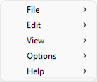
|
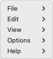
| 
|
| Dark |
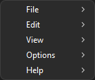
|
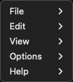
|
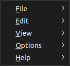
|
- Main menu appearance
| xtd::forms::main_menu | Windows | macOS | Gnome |
|---|---|---|---|
| Light |
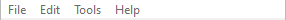
| |
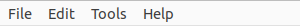
|
| Dark |
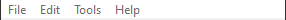
| 
|
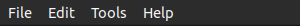
|
- Status bar appearance
| xtd::forms::status_bar | Windows | macOS | Gnome |
|---|---|---|---|
| Light | | | |
| Dark | | |
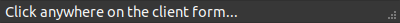
|
- Tool bar appearance
| xtd::forms::tool_bar | Windows | macOS | Gnome |
|---|---|---|---|
| Light |
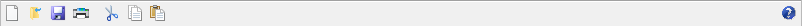
| | |
| Dark |
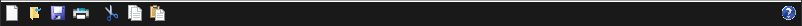
| | |
- Remarks
- Run the menus and toolars examples to see xtd::forms menus and toolbars in action.
Generated on Fri Mar 8 2024 22:00:10 for xtd by Gammasoft. All rights reserved.